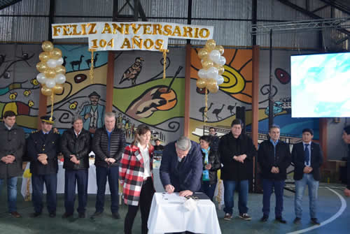

Real Chubut - Agencia de Noticias


El gobernador Arcioni encabezó los actos por el 104º aniversario de la Comuna Rural de Facundo

La presidente de la Comuna, Liliana Prieto felicitó al gobernador por construir “una provincia que combate la corrupción política que tanto mal nos hace a la sociedad”.
El gobernador del Chubut, Mariano Arcioni encabezó hoy en el Salón de Usos Múltiples de Facundo, el acto alusivo al 104º aniversario de ésta Comuna Rural. Junto a la presidenta de la Comuna, Liliana Prieto realizó aportes a la Escuela Provincial Nro. 70 compartió con los vecinos un desfile de instituciones y presenció en una pantalla gigante la final de la Copa del Mundo.
“Siempre es bueno llegar con anuncios, viendo las obras que se han realizado como el adoquinado; la ampliación de una sala velatoria y del Salón de Usos Múltiples. Hace poco tiempo inauguramos también un cajero automático. Son obras que a pesar de la situación económica, se consideran una prioridad. Siempre debemos acompañar el crecimiento de todas las localidades de la Provincia”, resaltó Arcioni.
Respecto a los proyectos realizados con el bono provincial remarcó el manejo responsable de los recursos. “Estas obras son maravillosas porque además se realizaron con mano de obra local”. A través de ésta herramienta se ampliaron instalaciones de la sala velatoria, el Salón de Usos Múltiples, el Albergue Municipal; obras de servicio, mejoramientos y viviendas sociales. También en el acto se firmó además un acta compromiso por el cual el Ministerio de Familia otorgó un subsidio no reintegrable para la adquisición de leña e insumos en el marco del refuerzo del Plan Calor 2018.
“Es una satisfacción acompañar éste cumpleaños” expresó insistiendo en la necesidad de “igualar” a los ciudadanos chubutenses sin importar el lugar en el que residan. “La situación económica y financiera sigue siendo complicada pero estamos saliendo con honestidad, transparencia y mucho esfuerzo. Sin hipocresías, trabajamos para el bienestar de los chubutenses; dando la cara y no dudo en que tendremos esa provincia que todos anhelamos”.
“Quiero felicitar y agradecer a la comunidad docente por estar al frente a las aulas sin interrumpir las clases. Dieron un ejemplo de que cualquier reclamo legítimo puede hacerse pero con los alumnos en las escuelas porque sin educación no puede haber progreso” agregó tras entregar materiales, libros y útiles a la Escuela Provincial Nº 70 “Capitán Carlos María Moyano” de Facundo.
Finalmente Liliana Prieto, presidente de la Comuna Rural, destacó el compromiso hacia la comunidad y el acompañamiento del Estado provincial.
“Un nuevo aniversario refleja los logros y avances de la Comuna. Pudimos hacer obras con el bono y con un sobrante, hicimos cuatro mejoramientos sociales. Ya se firmó el convenio para un futuro proyecto para el servicio de cloacas del pueblo. Todo esto fue pensado en el beneficio de Facundo, que merece vivir dignamente.
Quiero felicitar al gobernador para que siga construyendo una provincia que combate la corrupción política que tanto mal nos hace a la sociedad, perjudicando a los que menos tienen. Si volvemos a poner en valor la honestidad, Chubut volverá a ser la tierra que nos merecemos”, finalizó.
PUBLICIDAD